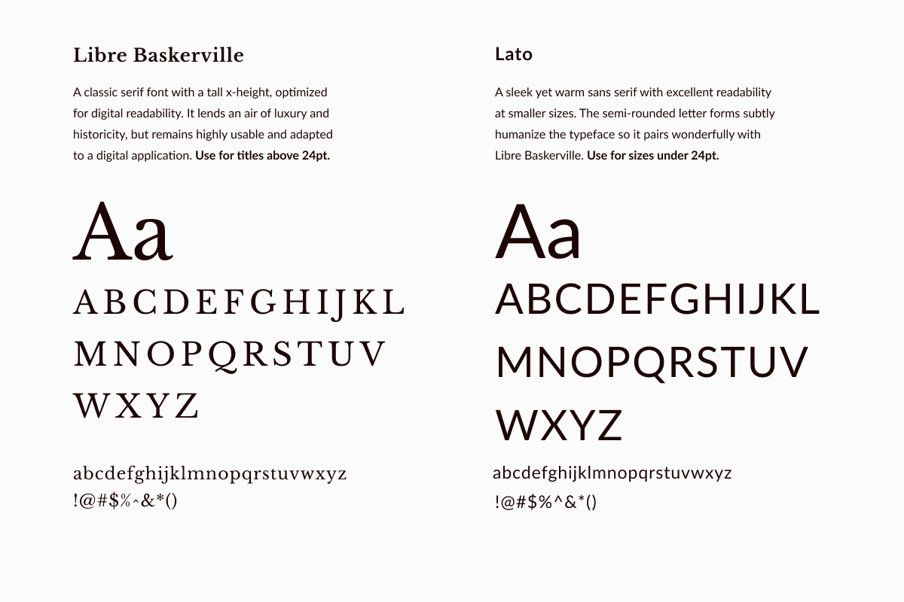
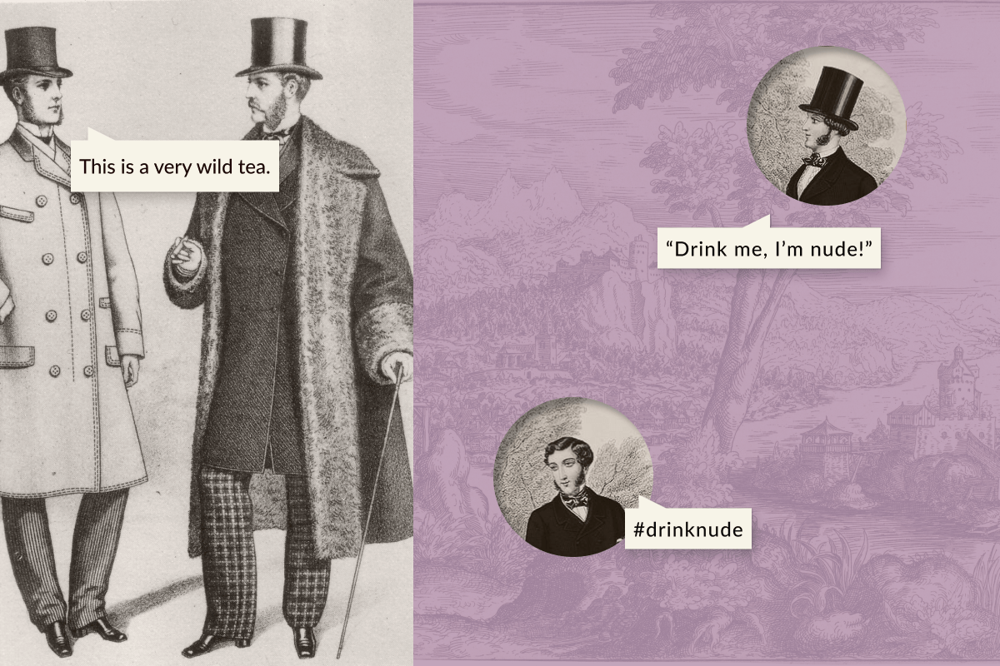
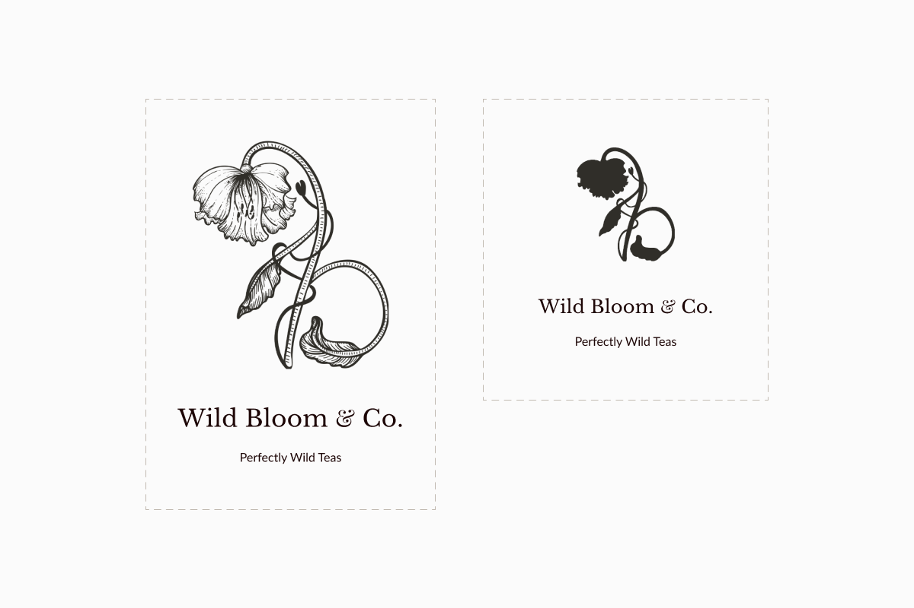
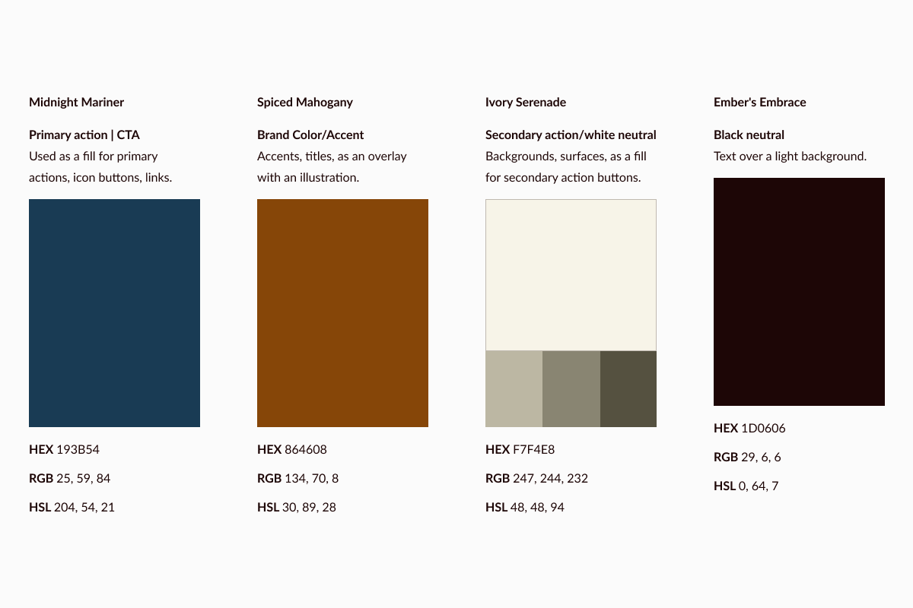
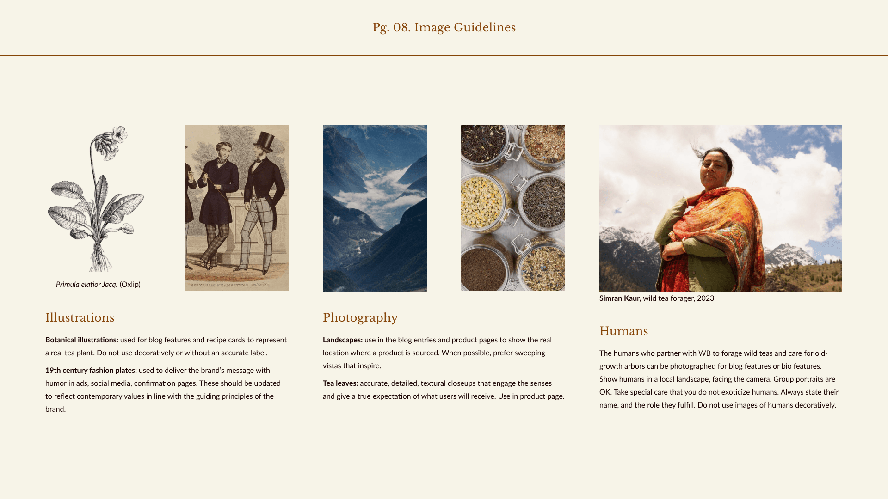
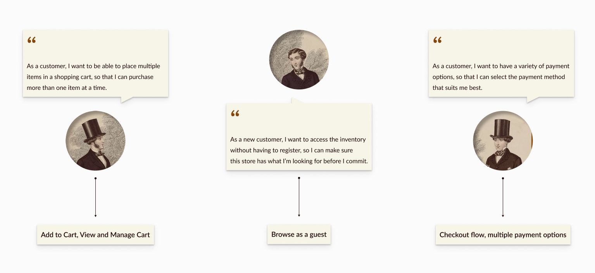

{kind=link}
Wild Bloom Branding process and UX design for the online store of a luxury tea company with an ethical mission.
Project overview
Wild Bloom is a contemporary tea company helping discerning urbanites obtain ethically sourced, wild-picked teas. The aim of this project was twofold: develop a cohesive and unique brand that effectively communicates the company values of Wild Bloom, and apply it in the design of a user-centric UI for their e-commerce platform.
The first challenge lay in capturing both luxury and ethical consciousness through a branding process. The second was to create a shopping platform that communicates the brand and can house large amounts of information without sacrificing usability.
The outcome is a comprehensive brand guide and e-commerce UI that blend a tongue-in-cheek Victorian esthetic with the contemporary principles of accessible design and usability.
Goals
-
1. Develop a cohesive and compelling brand for Wild Bloom. Ensure it aligns with their mission and resonates with their target customer base. Deliver a comprehensive brand guide.
-
2. Design an intuitive shopping experience for Wild Bloom. Ensure it effectively communicates company values without sacrificing usability.
Constraints
My role
Creative direction, visual and UX DesignTimeframe
2 weeksTools
Figma, Adobe Creative SuiteBranding process
Overview
The brand development process began with research. I dove into company materials and the web to fully understand their ethos, unique offering, client base and competitors. This helped me refine a brand concept and strategy that positioned Wild Bloom as a provider of “simplicity, luxury, and positive impact.” To express this unique positioning, I crafted a visual identity inspired by the Victorian era and the famous wit of Oscar Wilde. The outcome of this process was the documentation of the brand into a comprehensive Brand Guide. Read on to discover the details of the branding journey, or skip to phase two, in which I designed an e-commerce platform for Wild Bloom.
Company profile
Who are Wild Bloom? Champions of a wild-picked product, their signature line of “nude tea” is sourced in micro-quantities around the world and packaged with zero processing or additives. Each flavor is handled separately, while blend-lovers can follow unique recipes. This is a modern tea company operating at the intersection of ethics, innovation, and luxury.
Target audience
Wild Bloom caters to a demographic of sophisticated eco-conscious urbanites who enjoy premium experiences and unique products that blend luxury and sustainability.
{kind=link}
{kind=link}
{kind=link}
Core principles
After understanding Wild Bloom's unique value proposition, I defined three core principles that express it vividly and can be used to guide my design decisions: Wildness, Luxury, and Ethics.
-
1. A call to wildness
WB has a mission to “rewild” our tea habit by championing wild-picked tea, and tea grown via “rewilding” (rather than simply sustainable) practices. Their commitment to “wildness” is also an invitation to live the excitement of foreign lands and exotic flavors.
-
2. Luxury
WB offers a luxury product. Teas are foraged by hand in the wild all over the world with careful attention to each plant, then dried and packaged one flavor at a time, to ensure the most pure and natural experience.
-
3. Ethics
Long after the colonial era, the tea industry continues to be associated with unfair labor practices, harmful agricultural methods, and a long supply chain. Instead, Wild Bloom partners with local communities of foragers and growers to support small scale, old-growth arbor tea production and fully wild foraging methods. This benefits both the natural and human local ecosystems.
Brand direction
First key challenge: How can I express this rich set of values? After visual research into the history of tea, I chose to evoke the luxurious style of the Victorian era. A modern treatment of typography and white space would ensure the brand feels contemporary, and digital products have high usability. To express the Ethics principle, I would maintain transparency by folding informative content into the digital interface. Last came the principle of Wildness. I would channel the famous wit and style of Oscar Wilde. A touch of playful humor in the copy would help the brand come to life.
{kind=link}
Outcome
Typography
The first specific branding element I defined was typography. This choice defines which style of imagery, textures, and layouts will work well later on, so it is an important and early step that everything else is based on.
I chose Libre Baskerville for headings over 24pt. It's a legible serif optimized for digital use. It connects the product to Victorian esthetic and imparts a sense of luxury. Smaller headings and body text are set in Lato: a humanist sans serif that has warmth but reflects the brand's commitment to sleek, modern usability.
{kind=link}
Note: My first plan was to use Playfair Display for larger headings, and Nanum Gothic for smaller text. They paired beautifully and lent an air of luxury to the material. However, when I built the first mobile screens in Phase two of the project, I felt that the elegance of Playfair and warmth of Nanum Gothic weren't coming through as intended, and legibility was suffering. I made the change, then came back to update the brand guide.
Voice
In true Oscar Wilde fashion, Wild Bloom's brand voice must have intelligence, wit, sophistication. The product line titled “Nude Teas” allows for playful copy ‐ within decorum of course!
{kind=link}
Logo
In the logo I sought a balance between a historical, handcrafted pictorial language and modern usability requirements. While the logo is an illustration in the Victorian Naturalist style, it contains brand elements such as the initials WB, the principle of going wild as a dancing flower, and a small reference to the rod of Asclepius, hinting at the medicinal benefits of a pure lifestyle. I created a reduced silhouette to be used in place of the detailed illustration at sizes below 1.5 in., ensuring clarity across applications.
{kind=link}
Color Palette
I built a complementary palette of rich hues that evoke Victorian grandeur and adventurous tea voyages. Backgrounds, surfaces, and text blocks take on analogous warm tones, while interactive elements use a contrasting dark blue.
{kind=link}
Image Guidelines
I defined image guidelines for illustrations, photography, and humans.These guidelines should cover every image use within the company brand, beyond the app that I would design next. Image guidelines help keep the focus on the brand principles by emphasizing clarity, realism, and respect.
{kind=link}
Validation and next steps
A visual identity is evaluated by how well it resonates with the target audience, and how effectively it communicates the company's values.To assess interest and engagement levels, I consulted members of the target audience and met with positive responses. A comprehensive testing phase is preferable, and in future the brand identity can be validated and iterated on with the help a Brand Perception Survey.
I documented the visual guidelines in a living Brand Guidelines document that will serve as a reference and ensure consistent brand representation across various touchpoints over time.
The well-crafted and consistently applied brand will lead to increased engagement, higher conversion rates, and stronger customer loyalty.
UX design process
With the Brand Guide in place, I turned my attention to designing Wild Bloom's e-commerce platform. Curious about phase one, in which I designed a brand identity? Read about it above.
Discover
I revisited my user personas with a focus on where, when, and why they would use Wild Bloom's online store. I also researched existing solutions for purchasing wild-picked tea online. This helped me understand the needs and pain points that I need to address. I discovered that
"for urban dwellers, wild tea is hard to get."
Currently very few, specialized, and difficult-to-access vendors can offer a product that is fully wild. Clients have to do their own research, and navigate the complex language of fair-trade and organic certifications around the world. They need to travel to specialty fairs, out-of-the-way brick and mortar stores, or trust small online vendors whose digital stores are hastily built with little care for UX or branding. Even then, clients will encounter very limited flavor options.
{kind=link}
Define
The project brief dictated some specific user stories that I needed to address. From these, combined with research insights, I extracted the features I would focus on: a browsing and checkout flow with a guest browsing option, well-organized cart, a secure checkout process.
{kind=link}
Develop
To develop my chosen features, I sketched out flows and wireframes for the platform. A first iteration of the shopping experience was tested with 5 participants using one scenario: “Pick a product, place it in your cart, then go through the checkout steps to complete the purchase.” Scroll on for notes on the feedback I received, the revisions I made, and those I didn't.
{kind=link}
{kind=link}
{kind=link}
Deliver
After applying adjustments per testing outcomes, I applied the visual brand. I did this carefully and with my second key challenge in mind: I had to maintain high usability at small screen sizes and still communicate the Victorian-inspired visual identity. Three things helped: consistent use of a limited color palette, keeping heavier touches to empty pages like the confirmation page shown below, and maintaining clear and consistent typographic hierarchy.
I changed typefaces at this stage: I had intended to use Playfair Display for headings until I started building mobile screens. I opted for Baskerville Libre instead: it has great legibility and balanced letter forms well suited for digital applications.
{kind=link}
High fidelity
I built a high-fidelity prototype to give a fuller sense of the interactivity throughout the shopping experience, especially in the accordion menus that house the information structure of the product screens and shopping cart. I also created a Desktop version of the UI to define its responsive behavior.
{kind=link}
{kind=link}
Takeaways
Challenges and solutions
-
1. Balancing branding and user experience
A Victorian-inspired esthetic presents a usability challenge because of the period's rich use of detail and bold typography. I strategically integrated Victorian-inspired touches into the UI while prioritizing readability and navigation.
-
2. Presenting lots of information within a clean and
appealing UI
To maintain transparency and protect user trust, I needed to house detailed information about the company's products, sourcing, and local initiatives within a clean and appealing interface. I did this by organizing content hierarchically, using expandable sections for additional information, and integrating intuitive navigational elements to ensure that users had access without overwhelm.
-
3. Creating a playful brand voice
The challenge lay in crafting a brand voice that captured the right blend of humor and sophistication. To meet this challenge I channeled the wit and style of Oscar Wilde, using taglines like "We make tea nude" and playful hashtags to convey the brand's personality within the bounds of decorum.
Next Steps
-
1. Conduct further testing to validate the brand strategy and second iteration of the UI, and address any new usability problems.
-
2. Collaborate with a dedicated content strategist to ensure that the textual content aligns seamlessly with the visual brand identity and user experience. This would enhance the platform's message clarity and establish a compelling narrative throughout the user journey.
-
3. Create a comprehensive design system to centralize visual and UI components, fostering consistency and efficiency across design and development efforts, and ensuring the project is scalable.